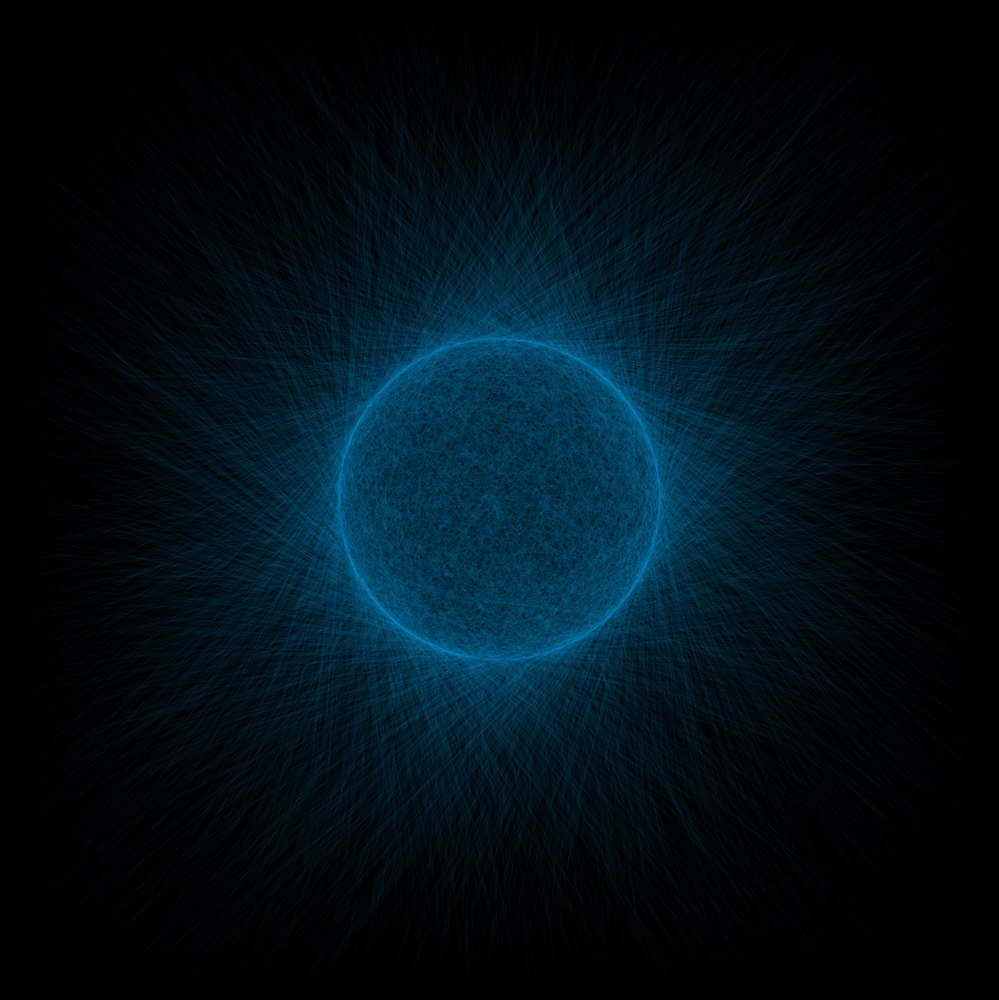

First posted on April 20, 2015 by fermibot
This post is named Random-Art not because the idea struck randomly, but there was randomness used in the
calculations wile generating these images. The idea is as follows. There is a mapping of a set of lines from
one geometric figure to the other. For example consider this image.
Example: Mapping from \((x=\sin(t), y=\cos(t))\) to \((x=2\sin(t), y=2\cos(t))\) and t is
taken from 0 to \(2\pi\) in steps of \(\frac{\pi}{500}\). In the following figure, the lines start at
regular intervals from the inner circle and reach the outer circle (in the first case) and they start at the
inner circle go towards the outer circle but the randomness associated with them does not make a regular
geometric figure (in the second case).
Making some tweaks to the code the following image has been obtained. Click the image for the high resolution version.
A graphics grid of the same idea with different colors